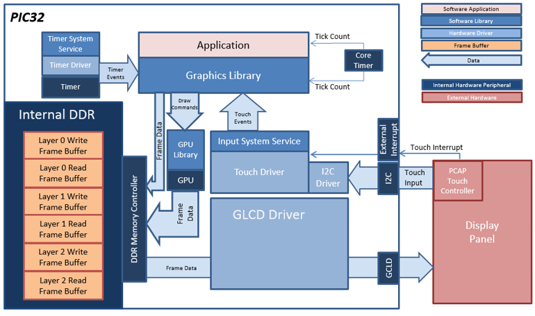
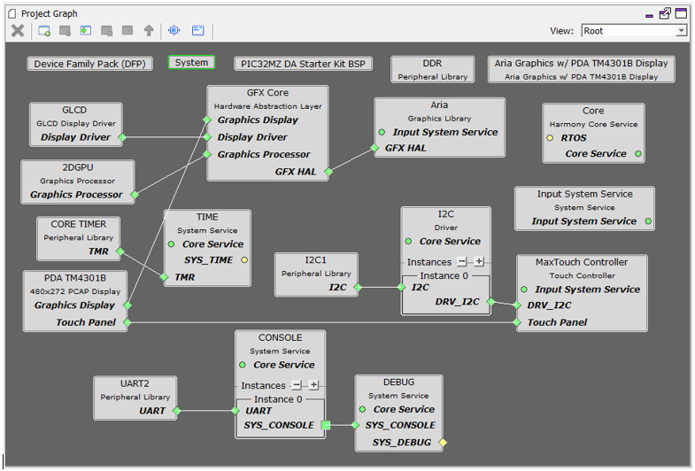
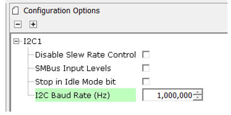
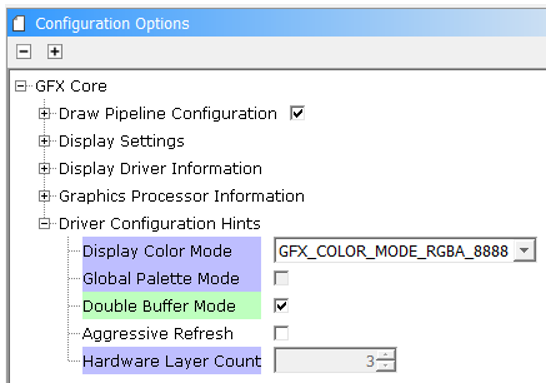
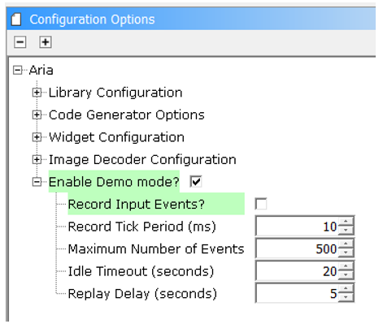

|
MPLAB® Harmony Graphics Suite Applications
|
This application showcases various widgets in a practical application: a car infotainment system.
The demonstration launches with a splash screen highlighting basic motion capability supported by Aria Graphics Library.
When running the application, the user can interface with it via capacitive single-fingered touch and swiping gestures.
Widgets such as circular slider, radial menu, list and image plus are used in the main screen UI to support five different modes: Climate Control, Phone, Navigation, Bluetooth, and Music Player.
An information screen is used to explain the features demonstrated in this application.
The application goes into demonstration mode after 20 seconds of idle time (no touch input received).
The block diagrams below show the various software and hardware blocks used in this application:
aria_infotainment_mzda_intddr_sk_meb2_wqvga
For this configuration, the application uses the Graphics library to render graphics to the display. The Graphics library passes draw commands into the Nano2D GPU Library, which in-turn draws the widgets and images to the three individual write frame buffers (one for each layer) that are stored in an external DDR2. Via the DDR2 Memory Controller, the Graphics LCD (GLCD) display controller peripheral continuously transfers frame data from the all three read buffers onto to the LCD display. The write and read frame buffer pairs are swapped independently as required when the Graphics Library is done rendering to the write frame buffer and GLCD driver signals the GLCD peripheral to change its read location.
The application also features user touch input through the integrated touch screen on the display panel. Touch input from the touch controller goes thru the I2C port, and the Touch System Service acquires the touch input information from the touch and I2C drivers. The Touch System Service sends touch events to the Graphics library which processes these events and updates the frame data accordingly.
The core timer is used by the application and the Graphics library to manage the movement of the splash screen, the momentum decay of the radial menu and to trigger simulated input events for the Demo Mode.

Demonstration Features
• Integrated PCAP Touch Input
• Three graphics layer supported via the GLCD peripheral on the PIC32MZ DA device
• Preprocessed Image assets to leverage GPU peripheral supported
• 32-bit RGBA8888 color depth support (16.7 million unique colors)
• Per-layer frame double-buffering
• Image compression techniques using Run-Length Encoding, PNG, and JPEG
MPLAB Harmony Configurator Setup
The Project Graph diagram below shows the Harmony components that are included in this application. Lines between components are drawn to satisfy components that depend on a capability that another component provides.

Adding the “PIC32MZ DA Starter Kit BSP” and “Aria Graphics w/ PDA TM4301B Display” Graphics Template component into the project graph will automatically add the components needed for a graphics project and resolve their dependencies. It will also configure the pins needed to drive the external peripherals like the display and the touch controller.
The I2C Baud Rate for the I2C1 component to 1,000,000 Hz.

Enable Double Buffer Mode in GFX Core

In the Aria component, demo mode is enabled

|
Name |
Description |
|
This section identifies the MPLAB X IDE project name and location and lists and describes the available configurations for the Aria Infotainment demonstration. | |
|
This section describes how to configure the supported hardware. | |
|
This section provides instructions about how to build and run the Aria Infotainment demonstration. |
|
MPLAB® Harmony Graphics Suite Applications
|